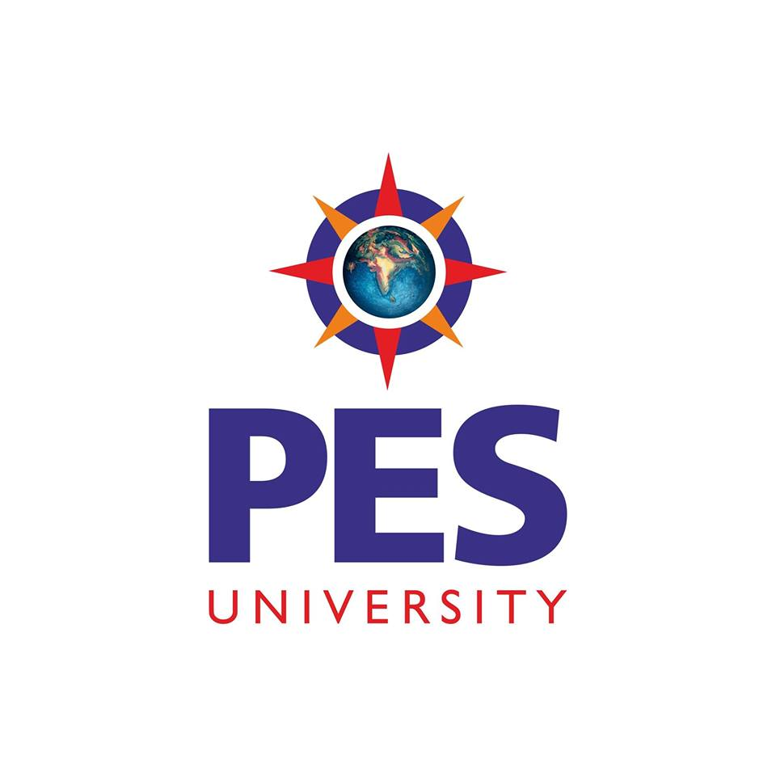
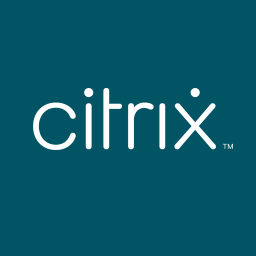
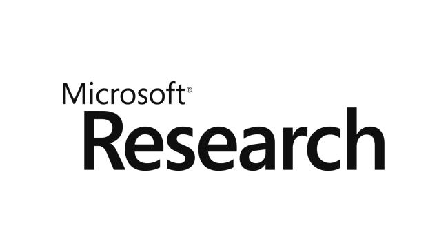

Shrey Tiwari
PhD Student
Carnegie Mellon University
About Me
Hey! I'm a PhD student in the Software and Societal Systems Department at Carnegie Mellon University, advised by Prof. Rohan Padhye in the PASTA Lab. My research interests span Software Engineering, Programming Languages, and AI for Code.
My research focuses on ensuring software reliability through a diverse set of approaches, including building precise static and dynamic analysis tools, developing automated testing techniques, and more recently, leveraging software agents to detect and prevent bugs at scale.
Previously, I was a Research Fellow at Microsoft Research India (Cloud Reliability team) developing program analysis tools for ensuring software reliability in Azure, advised by Dr. Akash Lal and Dr. Suman Nath, and a Software Engineer at Citrix Systems building cloud-based distributed VPN solutions.
News & Updates
🏆 Honored to be selected as a Hima and Jive Fellow for the 2025-26 academic year! Grateful for this recognition and support of my research.
🎓 From student to guest lecturer - shared insights on bridging static analysis from research to production in CMU's Program Analysis class
🎙️ Excited to share my podcast episode! Dive into the wild world of temporal computations as I chat about my award-winning research on date/time bugs and my journey from industry to academia. Listen on YouTube, Spotify, and Apple Podcasts!
🚀 One of my Uber internship projects is live! Learn more at Uber's uReview blog!
🎉 Our paper on concurrency testing got accepted to OOPSLA 2025!
🧑🏻💻 Excited to kick off my summer internship with Uber's Programming Systems group
🏆 Delighted to receive the ACM SIGSOFT Distinguished Paper Award at MSR 2025!
🧑🏻🏫 I will be mentoring a CMU undergraduate on her independent research study for the semester. More details to follow soon!
🎉 Our latest paper on date and time defects in software has been accepted to MSR 2025
👋 Serving as a Student Volunteer at SPLASH 2024. Come say hi if you're attending!
🧑🏻🏫 I will be mentoring three outstanding REU students throughout Summer '24. Update: Our paper on date and time defects in software is publically available now!
🎓 I began my Ph.D. journey at Carnegie Mellon University
🎉 Our paper on making software more robust against resource leaks has been accepted to OOPSLA 2023
🧑🏻💻 Joined Microsoft Research as a Research Fellow in the cloud reliability team lead by Dr. Akash Lal
🎓 Graduated from PES University and joined Citrix as a Software Development Engineer
Publications
DateSAT: A Framework for Solving Date and Period Constraints
International Conference on Computer Aided Verification (CAV) 2026
Under Review
Chronically Buggy: Analyzing Date/Time Pitfalls In Open-Source And LLM-Generated Python Code
Empirical Software Engineering (EMSE) 2025
Under Review
It's About Time: An Empirical Study of Date and Time Bugs in Open-Source Python Software
Mining Software Repositories (MSR) 2025
🏆 ACM SIGSOFT Distinguished Paper Award
Fray: An Efficient General-Purpose Concurrency Testing Platform for the JVM
Object-Oriented Programming, Systems, Languages & Applications (OOPSLA) 2025
Lightweight and Modular Resource Leak Checking (Extended Version)
State Of the Art in Program Analysis (SOAP) 2024
Inference of Resource Management Specifications
Object-Oriented Programming, Systems, Languages & Applications (OOPSLA) 2023
Resource Leak Checker (RLC#) for C# code using CodeQL
Selected Projects
NilAway: An Intelligent Nil Panic Detection Tool for Go
Uber Technologies, Inc.
Implemented an agentic AI-driven post-processing phase for NilAway that improves precision by reasoning over reported alerts, automatically synthesizing unit tests to validate nil panic bugs, and prioritizing alerts with reproducible failures.
uReview: AI-Powered Automated Code Reviews
Uber Technologies, Inc.
Improved code reviews on uReview (Uber's internal AI-powered code review tool) by enhancing the review generation pipeline to increase the precision and recall of generated reviews and surface more actionable feedback for developers.
FixIt: A Precise And Scalable Dynamic Resource-Leak Detection Tool
Microsoft Research
Developed a novel and scalable lightweight instrumentation-based tool for detecting resource leaks in managed programming languages like C# and Java, achieving approximately 79% accuracy by leveraging unit test suites.
Awards & Recognition
Hima and Jive Fellowship
Software and Societal Systems Department (S3D), Carnegie Mellon University
Selected as a Hima and Jive Fellow for the 2025-26 academic year in recognition of outstanding research contributions and academic excellence.
ACM SIGSOFT Distinguished Paper Award
Mining Software Repositories (MSR 2025), Ottawa, Canada
Honoured with the ACM SIGSOFT Distinguished Paper Award for research presented at MSR 2025.
SIGPLAN Student Travel Grant
SPLASH 2024, Pasadena, USA
Received competitive SIGPLAN funding to present work at SPLASH 2024.
University Gold Medal
PES University
Awarded the Gold Medal for graduating 2nd out of 500+ Computer Science & Engineering students.
C.N.R Rao Merit Scholarship
PES University
Six-time recipient of the CNR Rao Merit Scholarship (every applicable semester).
MHRD Merit Scholarship
Ministry of Human Resource Development, Government of India
Six-time recipient of the MHRD Merit Scholarship (every applicable semester).
Mentoring
Research Study Mentor
PASTA Lab
Mentoring an undergraduate student on her final year research project, where she collaborates with me on my ongoing research.
REUSE Program Mentor
Mentored three outstanding undergraduate students during the summer, contributing to CMU's recognition as having the best REU mentors in the United States.
Service
Admissions Committee
REUSE, 2026
Steering Committee
Software Engineering Seminar, 2025-2026
Student Reviewer
PLDI 2025, ISSTA 2024
Student Volunteer
SPLASH 2024
Past & Present Affiliations



